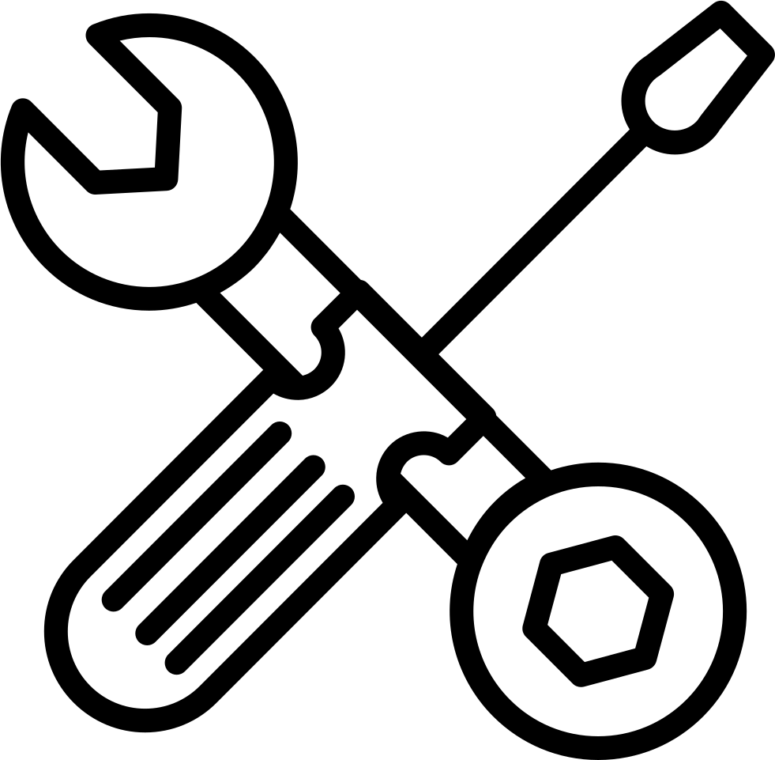

Preguntas frecuentes
La página «Penalti» no está disponible por mantenimiento técnico.
Por favor, inténtalo más tarde. ¡Gracias por tu comprensión!
¿Cómo se genera la predicción?
Nuestro algoritmo analiza las estadÃsticas de lanzamientos anteriores y el comportamiento del portero para estimar la probabilidad de gol o fallo.
¿Qué tan precisas son las señales?
La precisión de nuestras predicciones alcanza el 85 % con una estrategia óptima de gestión de riesgos.

Mantenimiento técnico en curso

 Preguntas frecuentes
Preguntas frecuentes